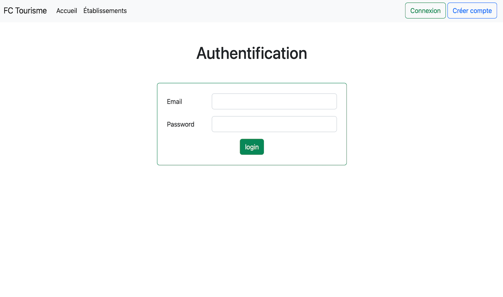
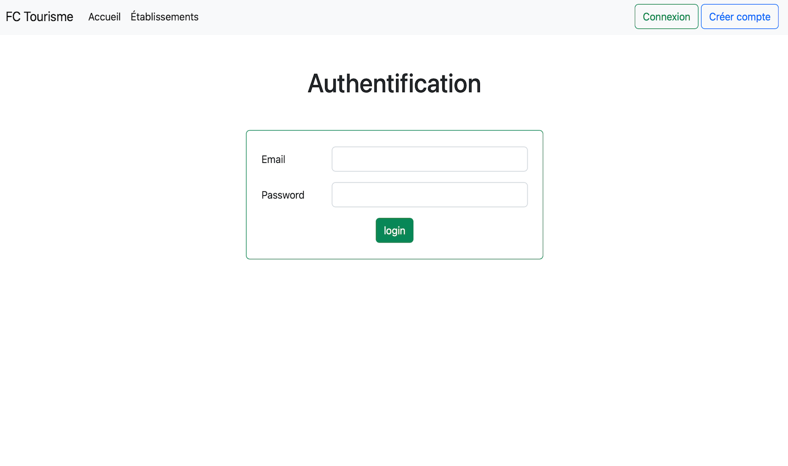
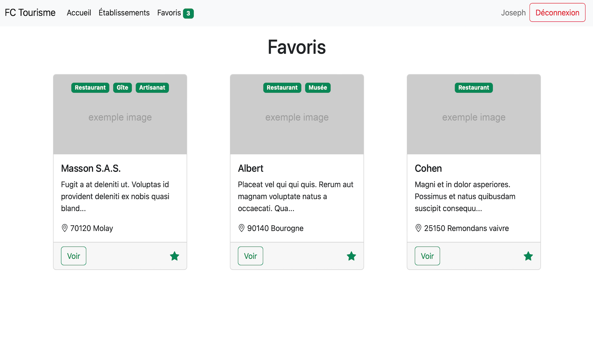
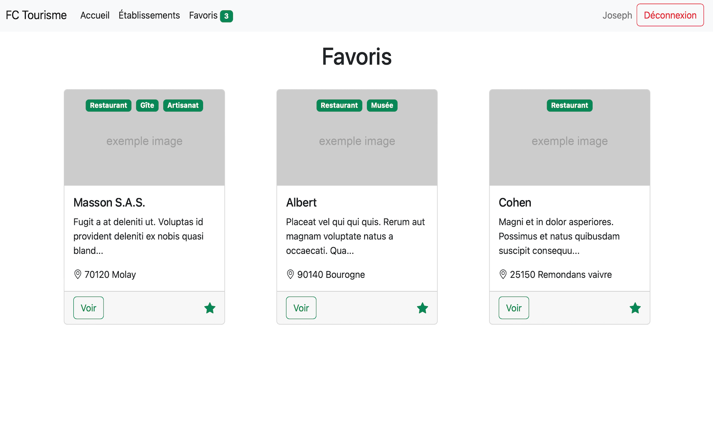

FC Tourisme
2e année de BTS Informatique
Sujet du projet
FC Tourisme permet de mettre en avant des établissements de la région Franche Comté afin de mieux les connaître. Les utilisateurs peuvent se créer un compte pour pouvoir mettre en favoris les établissements qu'ils veulent retrouver facilement.
 



 

Outils utilisés
- Frameworks : Symfony, Bootstrap
- Langages : PHP, Twig, HTML, CSS